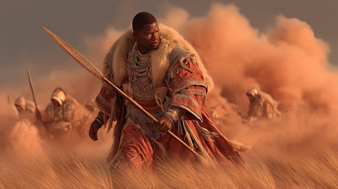

In the Dausi epic, before Bida was known for ambition, he was celebrated for valor. The Battle of Bida is a legendary episode where the young prince, still uncrowned, leads the warriors of Lagadu into battle against invading forces. This moment marks his rise as a warrior-hero, proving to his people that he was blessed by the gods and favored by fate.
The battle is remembered not just for its brutality, but for the awe it inspired. Griots tell of how Bida’s presence on the battlefield was like thunder given form, his blade an extension of ancestral will. He was not yet king, but those who saw him fight swore the kingdom had already chosen him.
This was the moment Bida won the hearts of Lagadu, and the moment that set his ambition aflame. For in victory, he tasted not just glory — but power.
The Battle of Bida
The dust rose high on Dagbon’s plain,
With steel in hand and war in vein.
No crown yet sat upon his brow,
But none could stand against him now.
He roared like fire from sky to stone,
A storm that fought the dark alone.
Ride, O Bida, with thunder’s cry,
The blade is swift, the gods are nigh.
Strike like fire, move like flame,
The world shall tremble at your name.
They came with spears, with foreign lies,
But met the storm in Gbewaa’s skies.
Bida stood, the wall unbent,
And through his rage, the heavens rent.
A thousand shields, a single will—
The boy would fight, the world stood still.
Ride, O Bida, with thunder’s cry,
The blade is swift, the gods are nigh.
Strike like fire, move like flame,
The world shall tremble at your name.
The rivers ran with stories bold,
Of battles fought and blood turned gold.
The griots sang from dusk to dawn,
Of how the prince became the brawn.
No crown yet forged, no throne declared,
But all who saw him knew and stared.
Ride, O Bida, with thunder’s cry,
The blade is swift, the gods are nigh.
Strike like fire, move like flame,
The world shall tremble at your name.
He was no god, yet walked like one,
A shadow cast beneath the sun.
And though his heart was not yet crowned,
The drums of kings within him sounded.
Now let the earth recall his stride,
Before the fall, before the pride.
The boy was steel, the war was won—
But peace would never find the son.